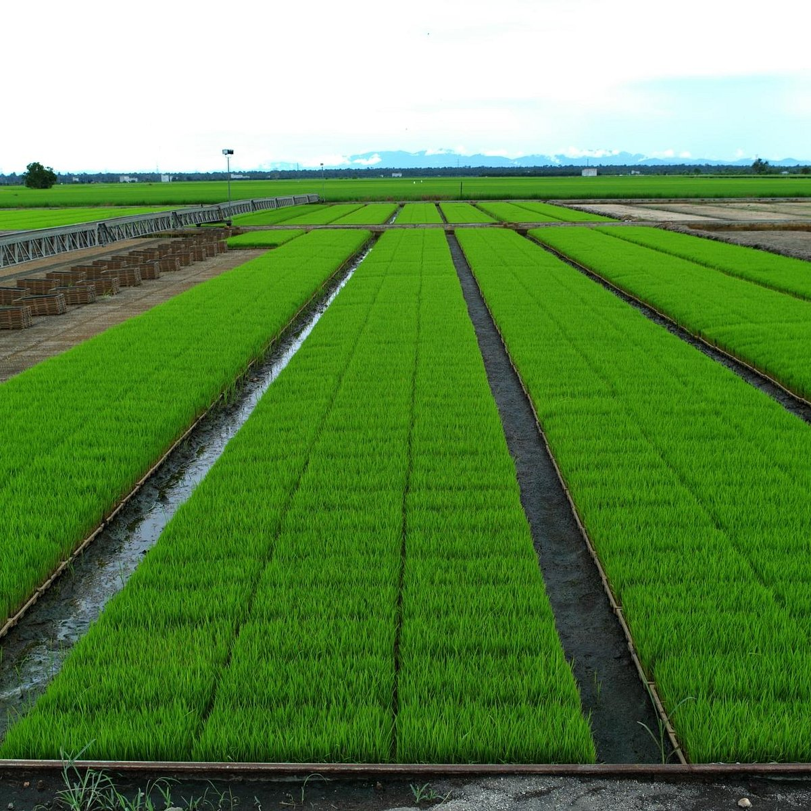

1
Kuala Lumpur: Urban Excitement
Start your Selangor adventure in the bustling capital city of Kuala Lumpur, a vibrant metropolis with a blend of modern skyscrapers, historical landmarks, and cultural attractions.
- Must-Visit:
- Petronas Twin Towers: Marvel at the iconic twin towers, once the tallest buildings in the world.
- Batu Caves: Climb the 272 steps to reach the Hindu cave temples and witness the colorful statues and murals.
- KL Tower: Enjoy panoramic views of the city from the observation deck of this telecommunications tower.
- Merdeka Square: Visit this historic square where Malaysia declared its independence.
- Activities:
- Explore Bukit Bintang: Shop at upscale malls, dine at trendy restaurants, and experience the city's nightlife.
- Visit the National Museum: Learn about Malaysia's history and culture through its exhibits.
- Take a stroll through the Perdana Botanical Gardens: Enjoy the tranquility of this beautiful park.
2
Sunway Lagoon: Theme Park Fun

Have a fun-filled day at Sunway Lagoon, a sprawling theme park with water slides, amusement rides, a wildlife park, and more.
- Highlights:
- Water Park: Cool off on thrilling water slides, relax in the wave pool, or float along the lazy river.
- Amusement Park: Enjoy exciting rides and attractions for all ages.
- Wildlife Park: Encounter a variety of animals, including tigers, lions, and elephants.
- Scream Park: Test your courage at this haunted house attraction.
- Nickelodeon Lost Lagoon: Splash around in this water park designed for younger children.
- Ticket Prices:
- Varies depending on the chosen package and attractions. Check their website for details.
3
Sekinchan: Paddy Fields & Seafood

Take a scenic drive to Sekinchan, a charming fishing village known for its vast paddy fields and fresh seafood.
- Highlights:
- Paddy Fields: Witness the picturesque scenery of endless green fields, especially beautiful during the planting or harvesting seasons.
- Sekinchan Wishing Tree: Make a wish and tie a ribbon on this iconic tree.
- Seafood Restaurants: Indulge in a seafood feast at one of the many restaurants offering fresh catches.
- Tips:
- Visit during the weekdays to avoid crowds.
- Bring your camera to capture the stunning scenery.
- Don't forget to try the local specialties like 'sang har mee' (freshwater prawn noodles).
4
Shah Alam & i-City: Modern Marvels
Conclude your Selangor trip by exploring the modern city of Shah Alam and the dazzling lights of i-City.
- Highlights:
- Sultan Salahuddin Abdul Aziz Mosque: Visit the Blue Mosque, one of the largest mosques in Southeast Asia, known for its striking blue dome and minarets.
- i-City: Experience a magical night at this theme park with colorful LED lights, interactive displays, and thrilling rides.
- Tips:
- Dress modestly when visiting the Blue Mosque.
- Visit i-City in the evening to enjoy the full splendor of its light displays.
- Consider purchasing a combo ticket for i-City to access multiple attractions.